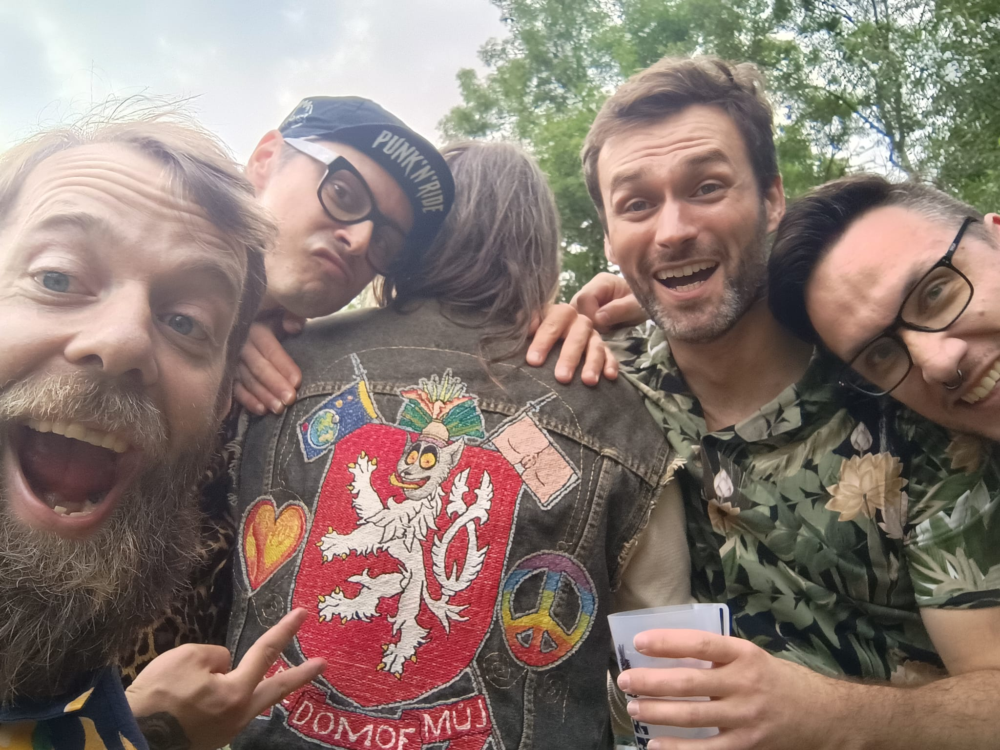
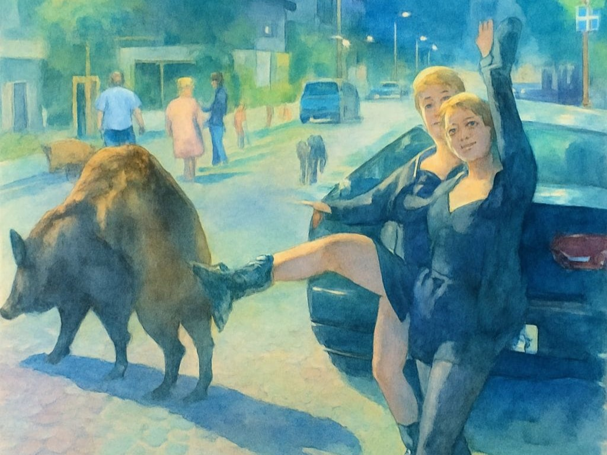
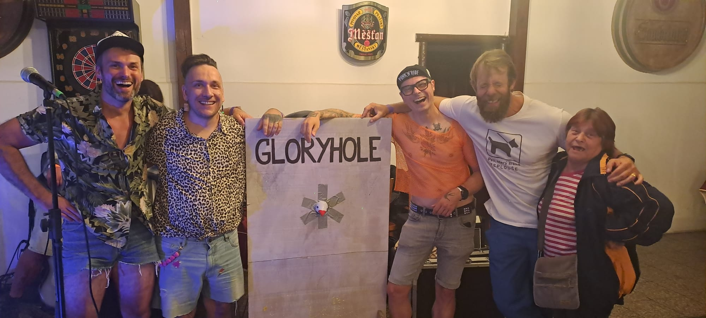
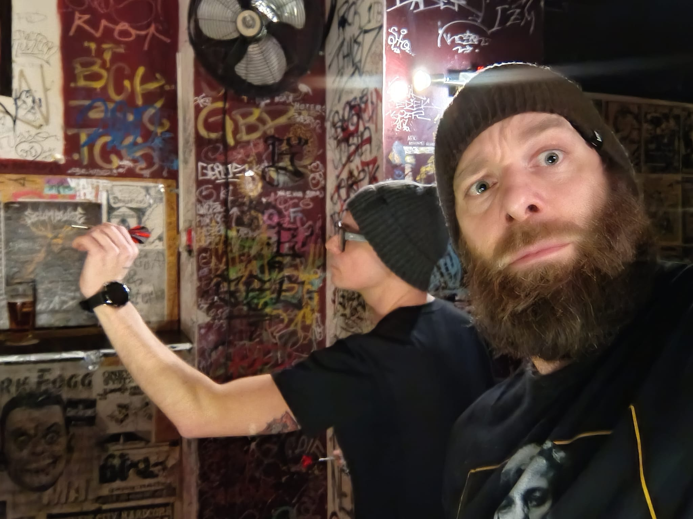

O nás
Pokud chceš vědět víc

Pokud chceš vědět víc

Do nitra naší tvorby

Kde nás uvidíš?

Vstup na vlastní nebezpečí
Křest máme úspěšně za sebou, jako celou šňůru během jednoho týdne! Do prázdnin se určitě ještě uvidíme! Zatím poslouchej naše nové CD (proklik v sekci diskografie). K poslechu na všech platformách.